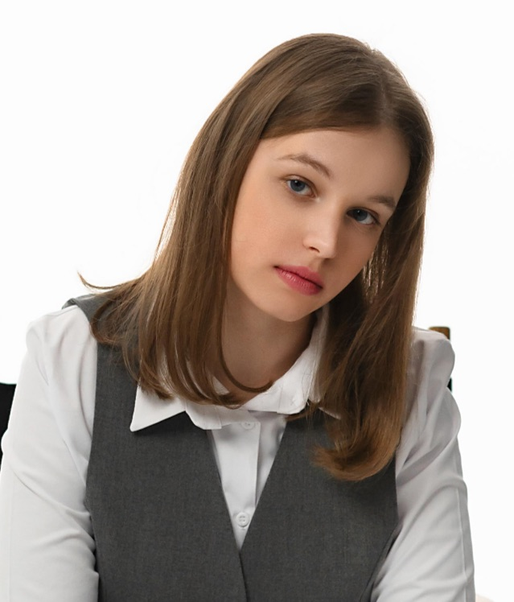

Інструменти, що адаптуються під тебе
Nura підлаштовує інтерфейс і структуру задач під твій стан. Великі проєкти стають зрозумілими кроками. Інформації — стільки, скільки потрібно зараз.
Знайомі моменти
«Вмикаю комп'ютер. Десять відкритих вкладок, на пів задачі почато, нічого не закінчено. Гортаю стрічку, бо легше».
Прибирає все зайве. Залишає одну активну задачу — ту, що ти можеш почати прямо зараз.
«Знаю, що треба написати звіт. Сиджу годину. Пишу заголовок, видаляю, переписую. Не можу почати».
Розбиває «написати звіт» на «відкрити файл, додати назву». Маленький крок — і ти вже всередині.
«Кожне сповіщення, кожна анімація, кожен яскравий банер виштовхує мене з фокусу. Не можу думати в такому шумі».
Один запит тиші. Анімації зникають, кольори стають м'якішими, сповіщення затихають — до кінця сесії.
Що вміє Nura
Без зайвих опцій і завантаженого інтерфейсу. Тільки те, що працює — і працює саме тоді, коли потрібно.
Перемикайся між коротким оглядом і повним контекстом одним рухом. Коли втомлений — Nura показує тільки головне. Коли є фокус — занурюйся в деталі.
Замість «написати звіт» — «відкрити шаблон», «додати заголовок», «окреслити три пункти». Nura перетворює великі задачі на конкретні дії, які займають кілька хвилин.
Затемнення, контраст, кольорові схеми, відключення анімацій — все в одній панелі. Інтерфейс підлаштовується під твою чутливість, а не навпаки.
Як це виглядає
Кожна функція — на своєму екрані. Ось як Nura поводиться у момент, коли тобі це найбільше потрібно.
У поганий день не потрібен повний список усього, що не зроблено. Огляд показує тільки наступний крок і прогрес. Решта чекає.
Коли є фокус — Деталі: повна історія, обговорення, посилання, файли. Все під рукою. Різні типи подачі для різних станів.
«Підготувати квартальний звіт» — це не задача, це паніка. «Відкрити шаблон» — це задача.
Nura пропонує план, ти приймаєш або корегуєш. Кожен крок — реальний за 2-5 хвилин, без додаткових рішень посередині.
Ранок: світліший інтерфейс, більший шрифт, активні переходи. Фокус: темніший, мінімум елементів, без анімацій. Спокій: ще тихіший — для пізнього вечора.
Зміна — один клік. Жодного копання у системних налаштуваннях. Профілі переключаються разом з твоїм станом.
Про нас
Більшість продуктивних застосунків створено з розрахунку на ідеальний день: ясну голову, повну енергію, відсутність відволікань. Реальність інша — і Nura створена для реальності, не для ідеалу.
«Ми не вчимо тебе працювати краще. Ми робимо інструменти, які це роблять простішим».— Команда Nura
Кожна функція ґрунтується на рецензованих дослідженнях когнітивного навантаження.
Не існує одного правильного способу працювати. Nura адаптується до твого підходу, а не намагається його випрямити.
Поведінкові патерни обробляються локально на пристрої. Жодних хмарних аналітик. Жодного продажу даних.
Команда
Дослідники, аналітики та дизайнери, що вірять: технології мають берегти увагу, а не її експлуатувати.
Координує створення адаптивної системи Nura.
Досліджує як цифрове середовище впливає на людину.

Показує, чому продуктивність - це точно не про кількість годин.
Створює інтерфейс, який лишній раз не перевантажує мозок.
Трансформує складну інформацію у зрозумілий формат.
Тарифи
Без прихованих платежів. У кожному плані — повний доступ до адаптивного ядра.
Для тих, хто пробує.
Для індивідуальної глибокої роботи.
Для команд, що бережуть свій ресурс.
Часті запитання
Якщо тут немає відповіді — напиши нам. Відповідаємо в робочі дні протягом 24 годин.
Залиш пошту — напишемо, щойно beta-версія буде готова. (Без розсилок та зайвих листів.)
Дякуємо!